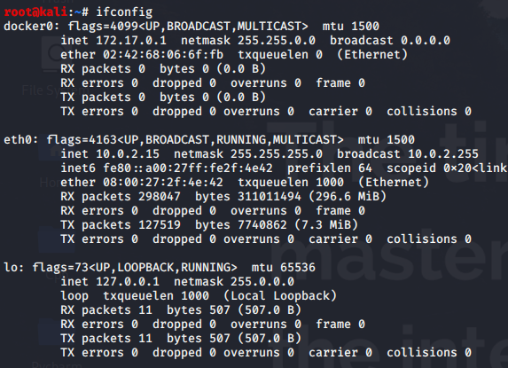

ifconfig : To get network details(ip address, sub-net, Mac)

Note: For wireless penetration tech
iwconfig: Details for wireless connected devices
ping : To check whether the host is up or not
ping 192.168.43.12

arp -a: Associating IP address with mac

netstat -ano : Displays Active connections